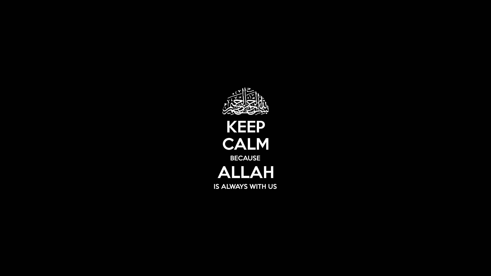

Karna hidup banyak warna web ini bikin kamu pilih warna
M2 (musahabah in the morning) adalah penyemangat kita sebelum kita memulai beljar mengajar di kelas agar kita dapat memotivasi diri dengan materi yang sangat menarik dan tentunya tidak membosankan melainka disana kita fun dan tentunya fun bil hikmah
3GM (Give Gold Generation of Moeslim) adalah kajian diamana kita mengkaji ayat atau disana pun kita membahas materi yang luar biasa hikmahnya dan biasanya kita itu dilakuakn seminggu 1 kali dan disana kita akan tau apa sih masalah remaja sekarang?
Rihlah adalah sebuah kegiatan di luar sekoalah tapi kita itu beljar dari alam (berekreasi) tetapi selain refresing di sana juga ada game yang tentunya semakin membuat kita senang dan di balik game itu ada hikmahnya lohhhh...